koloRo 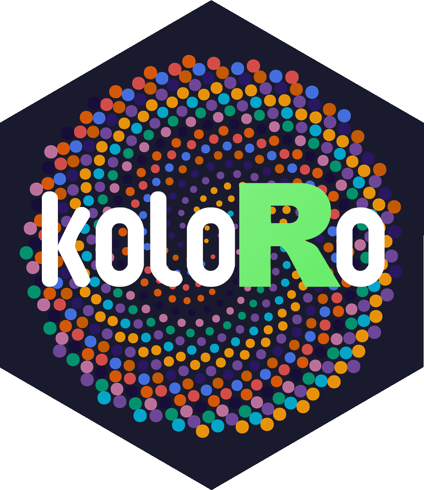
Color palettes for scientific visualization, accessibility, and geometric art


koloRo provides 282 palettes across 16 categories, including 34 colorblind-safe options from established standards. The collection features 30 Alhambra historical palettes derived from Nasrid dynasty spectroscopic analysis of original 13th-14th century pigments, 22 chameleon species palettes based on scientific documentation of reptile coloration patterns from three continents, and 18 cinema palettes inspired by the cinematography of Denis Villeneuve’s Dune films. Seamless ggplot2 integration supports discrete, continuous, and diverging scales for all visualization needs. Color manipulation functions enable creation of shadows, highlights, and color harmonies, while pattern generation tools facilitate geometric art and Islamic-inspired designs.
What is inside
| Layer | Components | Count |
|---|---|---|
| Palette access and inspection |
palettes, list_palettes, palette_info, display_palette, compare_palettes, palette_ramp, interpolate_palette, export_palette, pattern_colors, plot_palette, plot_category, plot_palette_grid
|
12 |
| ggplot2 integration |
scale_color_koloro (and colour alias), _c, _binned, _div variants for both colour and fill |
12 |
| Colour manipulation |
add_alpha, adjust_brightness, desaturate, highlight_color, shadow_color, mix_colors, complementary_color, analogous_colors, triadic_colors, invert_color, hex_to_rgb, rgb_to_hex, is_color
|
13 |
| Palette catalogue | RElab, scientific (viridis + Crameri), colorblind, alhambra, chameleons, natural, cultural, artistic, diverging, qualitative, cinema | 282 palettes / 16 categories |
Palette categories
| Category | Description | Palettes |
|---|---|---|
RElab |
Robust Ecologies Lab custom palettes | 6 |
scientific |
Perceptually uniform (viridis, Crameri) | 17 |
colorblind |
Accessibility-focused (Okabe-Ito, Tol, Wong) | 34 |
alhambra |
Nasrid dynasty historical pigments | 30 |
chameleons |
Chameleon species coloration patterns | 22 |
natural |
Ocean, forest, sunset, aurora | 41 |
cultural |
Japanese, Persian, Chinese traditions | 23 |
artistic |
Impressionist, Bauhaus, Art Deco | 13 |
diverging |
Bipolar data with neutral midpoint | 10 |
qualitative |
Categorical data | 10 |
cinema |
Dune film cinematography (Fraser, Cole) | 18 |
Gallery: diverse visualizations with RElab palettes
|
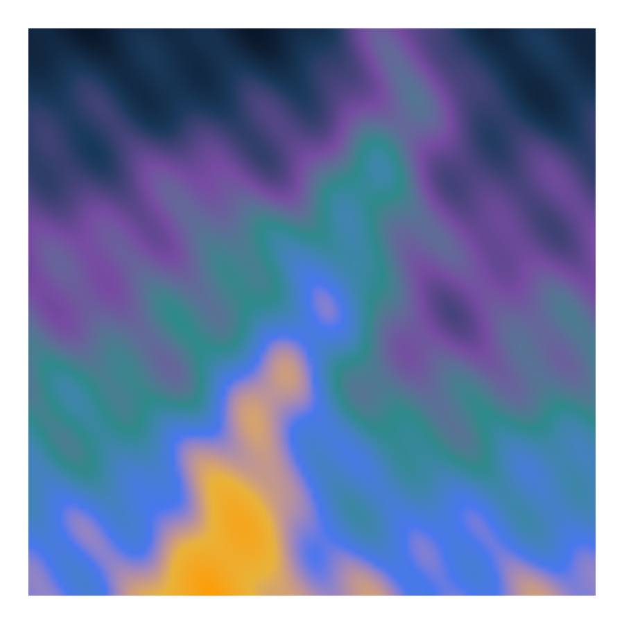 SST RElab_primary
|
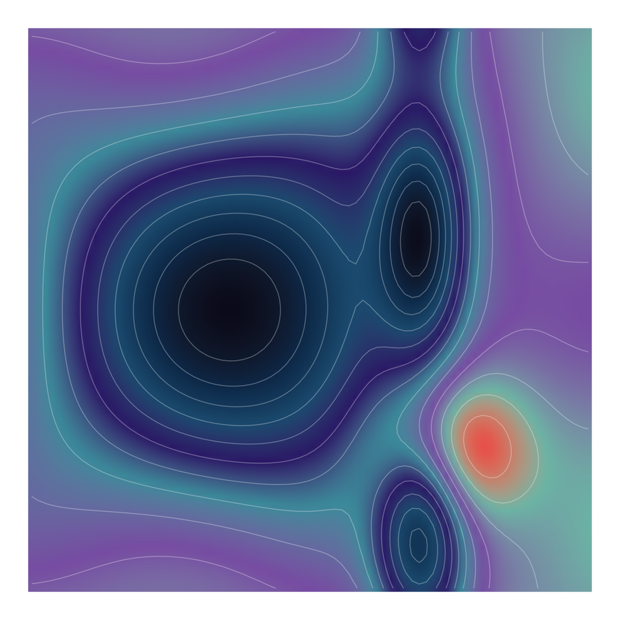 Bathymetry RElab_main
|
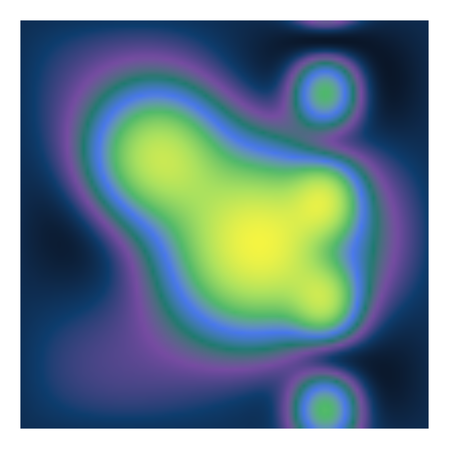 Chlorophyll-a RElab_primary
|
|
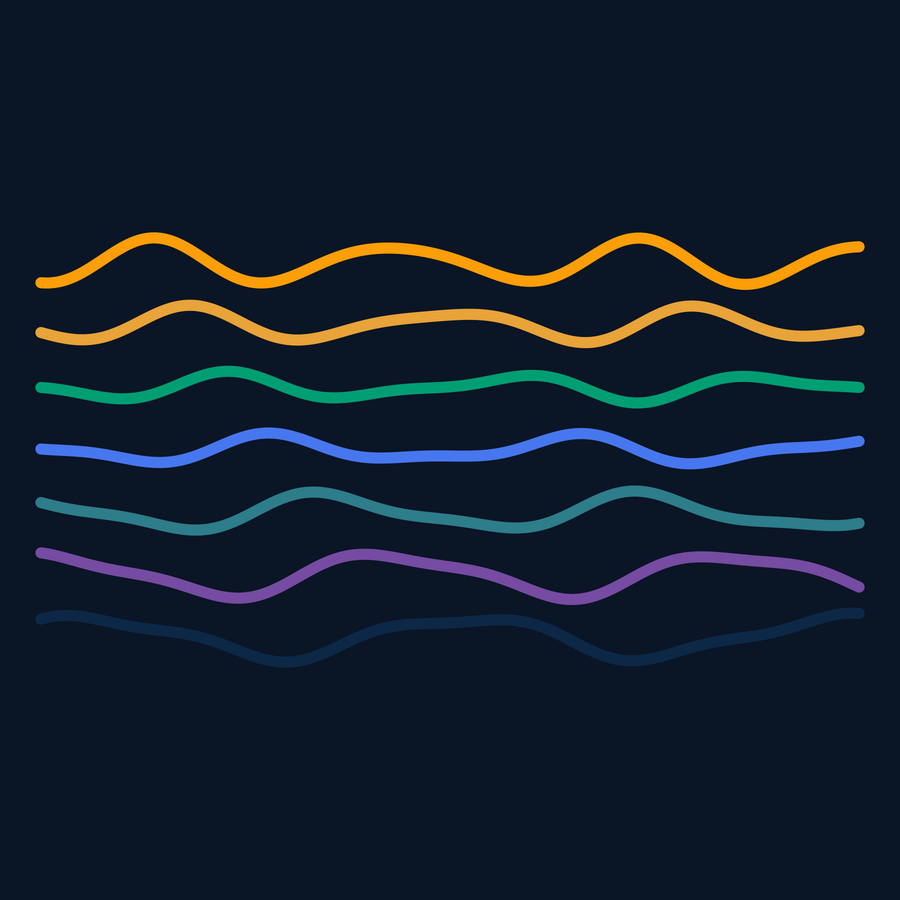 Waves RElab_primary + RElab_qualitative
|
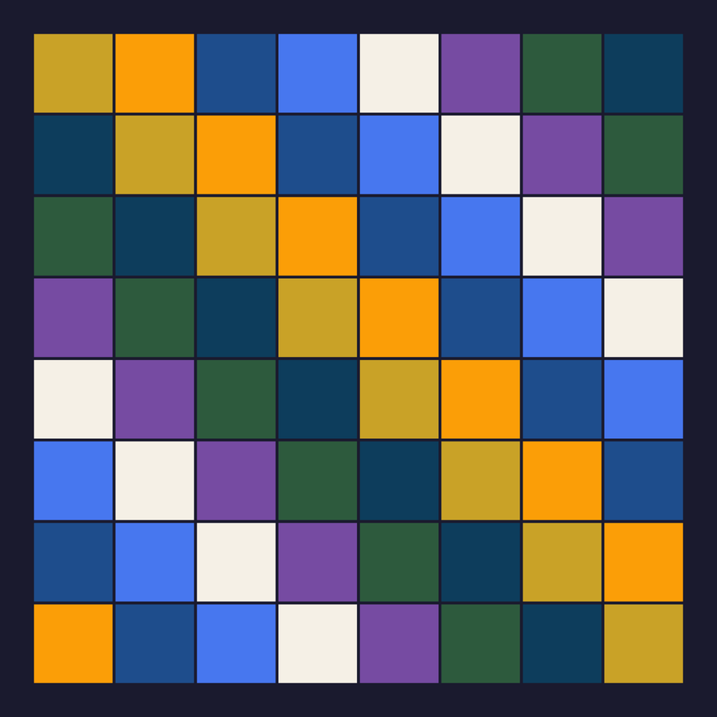 Mosaic RElab_primary + alhambra_nazari
|
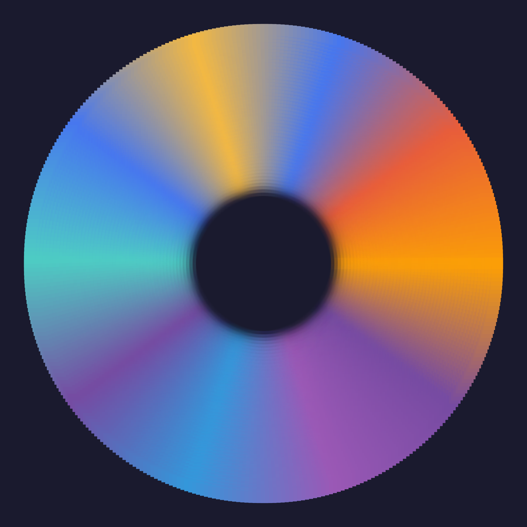 Spectrum RElab_primary + RElab_qualitative
|
Installation
Install the development version from GitHub:
# install.packages("devtools")
devtools::install_github("robustecologies/koloRo")Quick start
Access palettes by category or name
# Get a specific palette
palettes(palette = "okabe_ito")
#> [1] "#E69F00" "#56B4E9" "#009E73" "#F0E442" "#0072B2" "#D55E00" "#CC79A7" "#000000"
# Get all colorblind-safe palettes
cb <- palettes(category = "colorblind")
names(cb)[1:8]
#> [1] "okabe_ito" "okabe_ito_extended" "wong" "tol_bright" "tol_high_contrast" "tol_vibrant"
#> [7] "tol_muted" "tol_light"
# List all available palettes
head(list_palettes(), 10)
#> palette_name category n_colors
#> 1 RElab_main RElab 5
#> 2 RElab_primary RElab 5
#> 3 RElab_extended RElab 9
#> 4 RElab_diverging RElab 9
#> 5 RElab_sequential RElab 9
#> 6 RElab_qualitative RElab 8
#> 7 scientific 10
#> 8 viridis scientific 6
#> 9 magma scientific 6
#> 10 plasma scientific 6Visualize palettes
plot_palette("RElab_primary")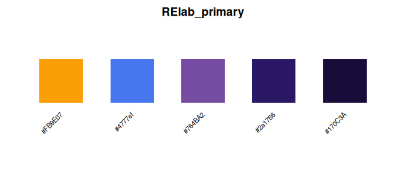
plot_palette(c("okabe_ito", "wong", "tol_bright", "RElab_qualitative"))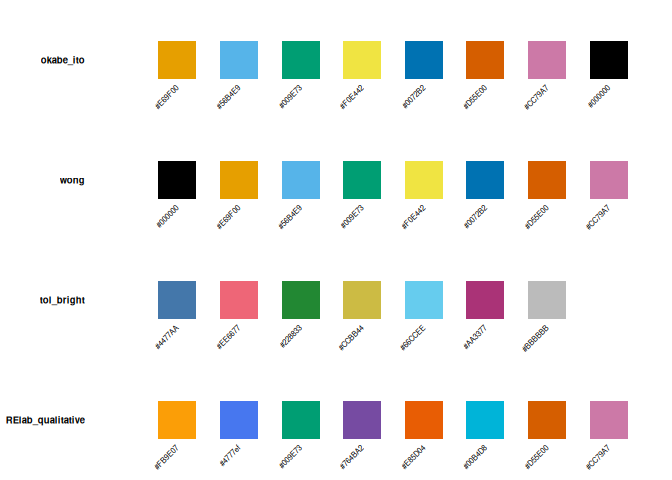
RElab palettes
The RElab (Robust Ecologies Laboratory) palettes are designed for scientific publications and data visualization:
plot_palette(c("RElab_main", "RElab_primary", "RElab_diverging", "RElab_qualitative"))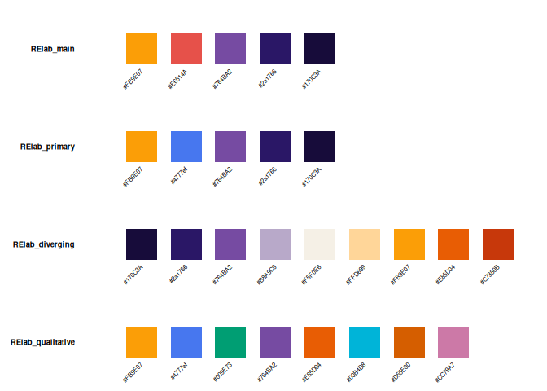
ggplot2 integration
koloRo provides seamless integration with ggplot2 through dedicated scale functions:
library(ggplot2)
# Scatter plot with RElab_primary palette
ggplot(iris, aes(Sepal.Length, Sepal.Width, color = Species)) +
geom_point(size = 3, alpha = 0.8) +
scale_color_koloro("RElab_primary") +
labs(
title = "Iris dataset with RElab primary palette",
subtitle = "Designed for scientific publications"
) +
theme_minimal() +
theme(
plot.title = element_text(face = "bold"),
legend.position = "bottom"
)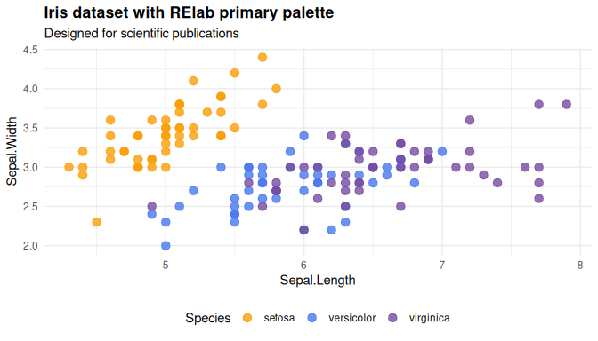
Continuous scales for heatmaps
ggplot(faithfuld, aes(waiting, eruptions, fill = density)) +
geom_tile() +
scale_fill_koloro_c("viridis") +
labs(title = "Old Faithful eruption density") +
theme_minimal()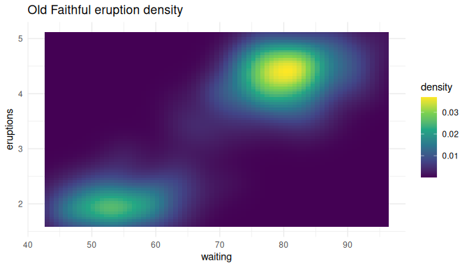
Diverging scales for correlation matrices
cor_data <- as.data.frame(as.table(cor(mtcars[, 1:7])))
names(cor_data) <- c("Var1", "Var2", "Correlation")
ggplot(cor_data, aes(Var1, Var2, fill = Correlation)) +
geom_tile() +
scale_fill_koloro_div("vik", midpoint = 0) +
labs(title = "Correlation matrix with Vik diverging palette") +
theme_minimal() +
theme(axis.text.x = element_text(angle = 45, hjust = 1))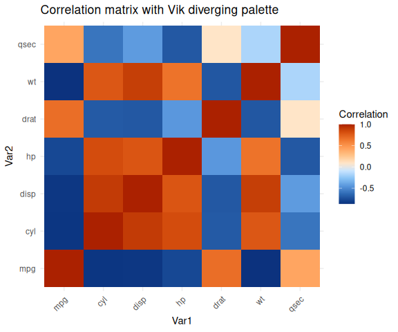
Alhambra historical palettes
The Alhambra palettes are derived from spectroscopic analysis of original 13th-14th century Nasrid dynasty pigments:
plot_palette(c(
"alhambra_nazari",
"alhambra_patio_leones",
"alhambra_sala_abencerrajes",
"alhambra_generalife"
))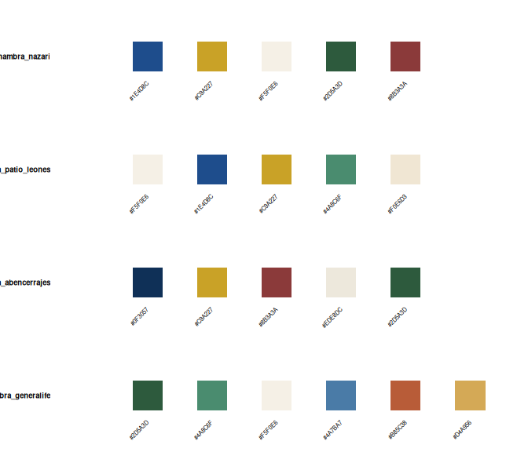
Authentic pigments
The colors reflect historical materials available in medieval Al-Andalus: blues derived from cobalt oxide and lapis lazuli; greens from malachite and verdigris (copper acetate); reds from hematite (almagre) and iron oxides; golds from gold leaf and amber resins; whites from lime wash (calcium carbonate) and gypsum.
plot_palette(c(
"alhambra_blues",
"alhambra_greens",
"alhambra_reds",
"alhambra_golds"
))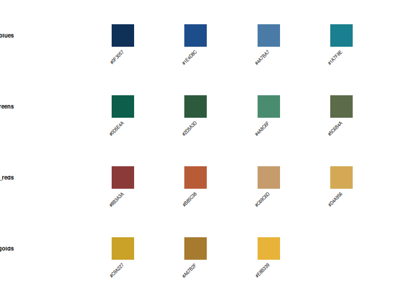
Using Alhambra palettes for geometric art
# Create a geometric pattern with Alhambra colors
set.seed(42)
n <- 12
grid <- expand.grid(x = 1:n, y = 1:n)
grid$color <- pattern_colors(nrow(grid), "alhambra_nazari", method = "cyclic")
ggplot(grid, aes(x, y, fill = color)) +
geom_tile(color = "white", linewidth = 0.5) +
scale_fill_identity() +
coord_fixed() +
labs(title = "Geometric pattern with Alhambra Nazari palette") +
theme_void() +
theme(plot.title = element_text(hjust = 0.5, face = "bold"))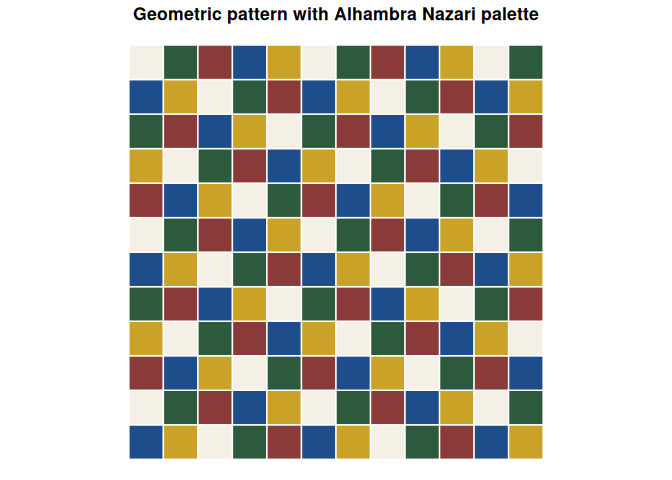
Chameleon species palettes
koloRo includes 22 palettes based on the documented coloration patterns of chameleon species from across their global range, derived from herpetological literature and natural history documentation:
plot_palette(c(
"chameleon_pardalis_ambilobe",
"chameleon_jacksonii",
"chameleon_calyptratus",
"chameleon_parsonii"
))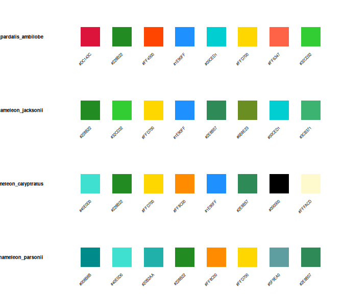
The panther chameleon (Furcifer pardalis) from Madagascar displays the most spectacular color variation, with distinct “locales” corresponding to geographic populations. Jackson’s three-horned chameleon (Trioceros jacksonii) from East Africa exhibits bright greens with blue and yellow accents. The veiled chameleon (Chamaeleo calyptratus) from the Arabian Peninsula displays bold turquoise, gold, and orange bands. Parson’s chameleon (Calumma parsonii), the world’s heaviest chameleon, features turquoise-blue-green body coloration with yellow-orange eye turrets.
Panther chameleon locales
The panther chameleon exhibits remarkable geographic color variation, with populations from different regions displaying distinct color morphs:
plot_palette(c(
"chameleon_pardalis_ambilobe",
"chameleon_pardalis_nosybe",
"chameleon_pardalis_tamatave"
))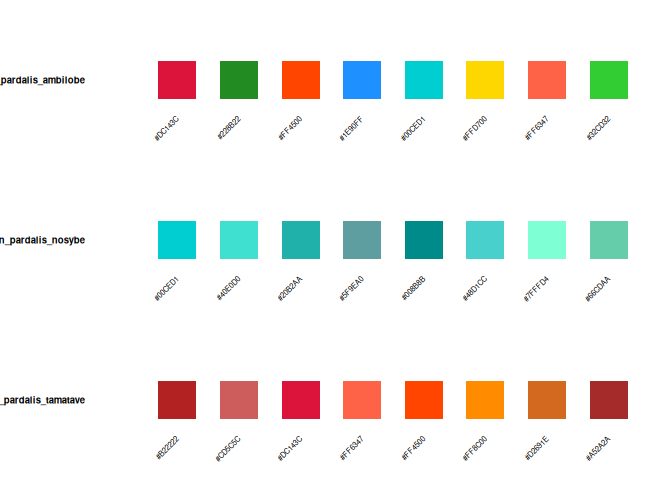
Using chameleon palettes with ggplot2
# Scatter plot with panther chameleon Ambilobe palette
ggplot(iris, aes(Sepal.Length, Sepal.Width, color = Species)) +
geom_point(size = 3, alpha = 0.8) +
scale_color_koloro("chameleon_pardalis_ambilobe") +
labs(
title = "Iris dataset with panther chameleon (Ambilobe) palette",
subtitle = "Furcifer pardalis: nature's most colorful chameleon"
) +
theme_minimal() +
theme(legend.position = "bottom")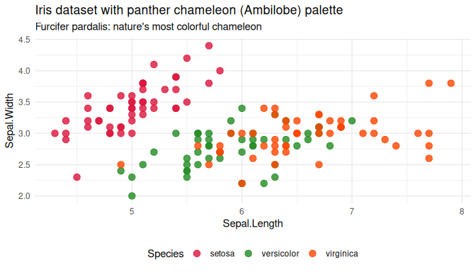
# Continuous scale with Jackson's chameleon palette
ggplot(faithfuld, aes(waiting, eruptions, fill = density)) +
geom_tile() +
scale_fill_koloro_c("chameleon_jacksonii") +
labs(
title = "Old Faithful eruptions with Jackson's chameleon palette",
subtitle = "Trioceros jacksonii: the three-horned chameleon of East Africa"
) +
theme_minimal()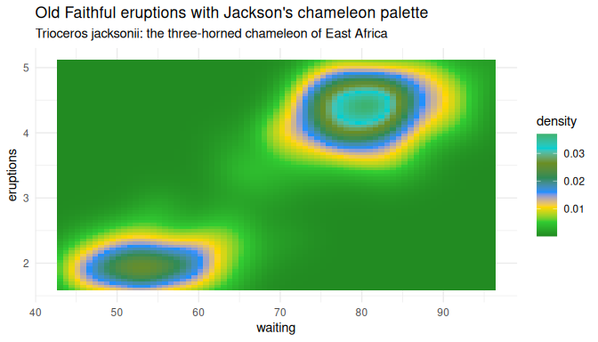
See vignette("chameleon-palettes") for complete documentation of all 22 chameleon species palettes with scientific references.
Cinema palettes
The cinema category draws from the cinematography of Denis Villeneuve’s Dune (2021) and Dune: Part Two (2024), capturing Greig Fraser’s bleach-bypass desert tones, faction color identities, and David Cole’s color grading signatures:
plot_palette(c(
"dune_deep_desert",
"dune_atreides",
"dune_spice"
))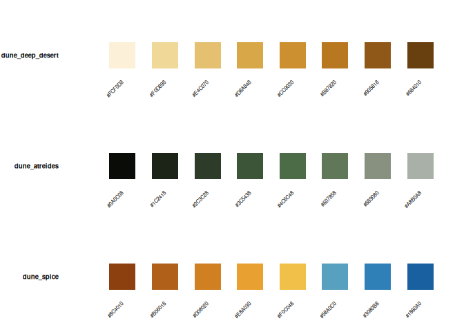
Some palettes from the movies Dune and Dune: Part Two
Colorblind-safe visualization
For accessible scientific communication, use validated colorblind-safe palettes:
ggplot(mpg, aes(class, fill = class)) +
geom_bar() +
scale_fill_koloro("okabe_ito") +
labs(
title = "Vehicle classes (Okabe-Ito colorblind-safe palette)",
x = NULL
) +
theme_minimal() +
theme(
axis.text.x = element_text(angle = 45, hjust = 1),
legend.position = "none"
)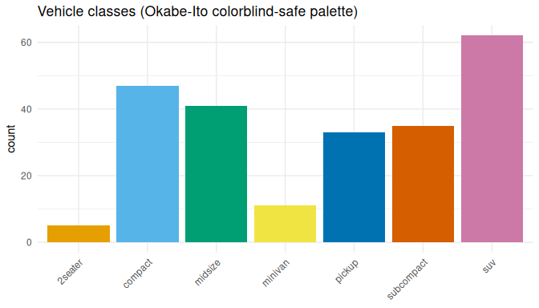
Oceanographic visualization
koloRo includes perceptually uniform scientific colormaps ideal for oceanography and earth sciences:
# Simulated sea surface temperature (SST) data
set.seed(123)
lon <- seq(-180, 180, length.out = 50)
lat <- seq(-60, 60, length.out = 30)
sst_grid <- expand.grid(lon = lon, lat = lat)
# Temperature gradient with latitude and some spatial variation
sst_grid$sst <- 28 - 0.4 * abs(sst_grid$lat) +
2 * sin(sst_grid$lon * pi / 60) * cos(sst_grid$lat * pi / 40) +
rnorm(nrow(sst_grid), 0, 1.5)
ggplot(sst_grid, aes(lon, lat, fill = sst)) +
geom_raster(interpolate = TRUE) +
scale_fill_koloro_c("batlow", name = "SST (\u00B0C)") +
labs(
title = "Sea surface temperature with Batlow palette",
subtitle = "Perceptually uniform colormap for scientific visualization",
x = "Longitude", y = "Latitude"
) +
coord_fixed(ratio = 1.5) +
theme_minimal() +
theme(
plot.title = element_text(face = "bold"),
legend.position = "right"
)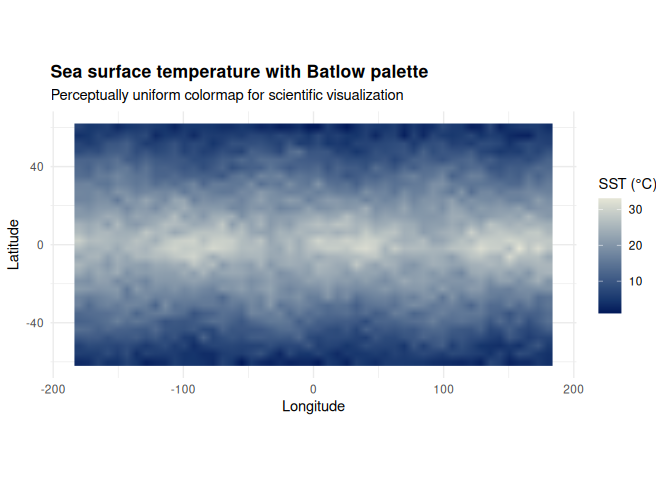
For diverging data like temperature anomalies, use diverging palettes centered at zero:
# Temperature anomaly data
sst_grid$anomaly <- sst_grid$sst - mean(sst_grid$sst)
ggplot(sst_grid, aes(lon, lat, fill = anomaly)) +
geom_raster(interpolate = TRUE) +
scale_fill_koloro_div("vik", midpoint = 0, name = "Anomaly (\u00B0C)") +
labs(
title = "SST anomalies with Vik diverging palette",
x = "Longitude", y = "Latitude"
) +
coord_fixed(ratio = 1.5) +
theme_minimal()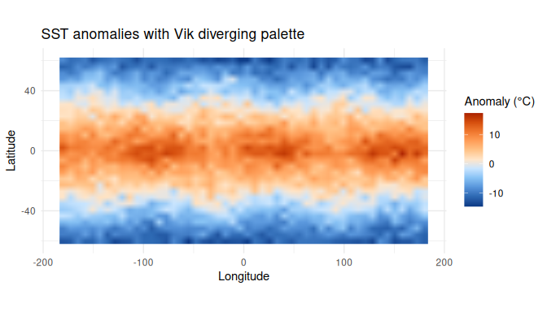
See vignette("scientific-palettes") for more oceanographic examples including bathymetry, chlorophyll-a, and salinity.
Color manipulation
koloRo provides functions for color manipulation:
base <- "#1E4D8C" # Alhambra blue
# Brightness adjustment
adjust_brightness(base, 0.3) # Lighter
#> #1E4D8C
#> "#6282AF"
adjust_brightness(base, -0.3) # Darker
#> #1E4D8C
#> "#153662"
# Color harmonies
complementary_color(base)
#> [1] "#8C5D1E"
analogous_colors(base, n = 5)
#> [1] "#1E8C5D" "#1E848C" "#1E4D8C" "#261E8C" "#5D1E8C"
triadic_colors(base)
#> [1] "#1E4D8C" "#8C1E4D" "#4D8C1E"
# Effects for 3D illusions
shadow_color(base, intensity = 0.4)
#> [1] "#1A3354"
highlight_color(base, intensity = 0.4)
#> [1] "#4577BA"Documentation
Explore the vignettes for detailed guidance:
# Introduction and quick start
vignette("introduction", package = "koloRo")
# Colorblind accessibility
vignette("colorblind-safe", package = "koloRo")
# Alhambra historical palettes
vignette("alhambra-palettes", package = "koloRo")
# Chameleon species palettes
vignette("chameleon-palettes", package = "koloRo")
# ggplot2 integration
vignette("ggplot2-integration", package = "koloRo")
# Scientific visualization (oceanography, climatology)
vignette("scientific-palettes", package = "koloRo")References
- Crameri, F., Shephard, G.E., & Heron, P.J. (2020). The misuse of colour in science communication. Nature Communications, 11, 5444. doi:10.1038/s41467-020-19160-7
- Okabe, M., & Ito, K. (2008). Color Universal Design (CUD): How to make figures and presentations that are friendly to colorblind people. JFly*. https://jfly.uni-koeln.de/color/
- Wong, B. (2011). Points of view: Color blindness. Nature Methods, 8(6), 441. doi:10.1038/nmeth.1618
- Tol, P. (2021). Colour schemes. SRON Technical Note SRON/EPS/TN/09-002. https://personal.sron.nl/~pault/
- Fernández-Puertas, A. (1997). The Alhambra: From the ninth century to Yusuf I (1354). London: Saqi Books. ISBN: 978-0-86356-466-6
Disclaimer
This package is the original creation of the author in all conceptual, theoretical, and design aspects. Implementation was assisted by Anthropic’s Claude Code v.2 (Opus 4.5) to streamline package development. All original ideas, creativity, and scientific contributions belong to the author, who maintains full responsibility for the package’s correctness and reliability. All the code has been thoroughly tested, and users are encouraged to report any issues through the package’s issue tracker.